Co nowego
Zmiany w ostatnich wersjach Pit Wall Crew.
Wersja 0.4.4.18 (21.11.2026)
NOWELinia jazdy (wersja próbna, pełna wersja): każda sekcja toru z góry – Twoja linia na tle najlepszej (Twojej albo kolegi z zespołu) i rady, gdzie jechać inaczej.

NOWENakładka OBS dla streamerów: pasek i karty z danymi auta, mini-mapa klasy, pojedynek (kto kogo dogoni i w którym stincie); widzowie pytają z czatu YouTube.

NOWENakładka działa też, gdy jedzie kolega z zespołu; ustawienia na stronie „Nakładka OBS” w oknie.
NOWELimity toru z podziałem na kierowców auta – głosem i na nakładce.
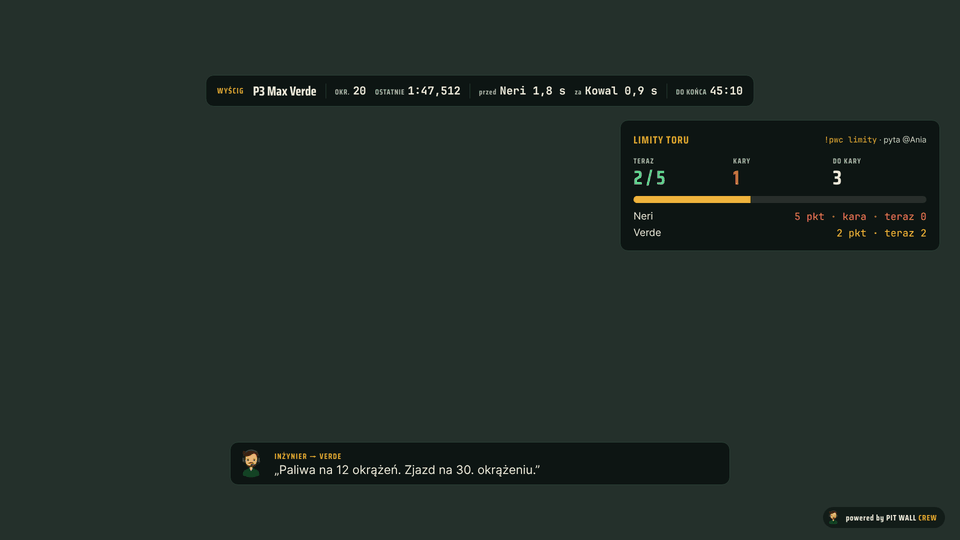
NOWEPit wall: wykres pozycji całej klasy, linie jazdy kierowców w porównaniu okrążeń, „plan nieaktualny” i wiek opon rywali.

NOWEGrafik: godzina w grze obok prawdziwej, noc liczona z godziny w grze.
NOWENowe pytania: ostatni pitstop, postoje i wiek opon rywala, średnia z ostatnich okrążeń, „jak jedzie Amadeusz w T5?”.
NOWEGłosem: „przypomnij mi za 5 okrążeń, żeby…” i „pitstop za 12 okrążeń”.
NOWEOstrzeżenia o dublowaniu „tylko przed hamowaniem”.

NOWEPiknięcia przy „naciśnij, mów, naciśnij” (można wyciszyć).

NOWEInżynier mówi, gdy zmienia się nagumowanie toru.
POPRAWKATemperatura hamulców w LMU w °C (była ok. 270° za wysoka).
POPRAWKAPorównanie okrążeń: dokładna strata, bez fałszywej straty na starcie.
POPRAWKANajlepsze okrążenie bez czasu skasowanego za limity toru.
POPRAWKALepsze rozpoznawanie mowy: nazwiska po brzmieniu, „Opony.” jako pytanie, więcej słów zamiast „pilnuj”.
POPRAWKAKomunikaty: sektor porządkowo, liczby z przecinkiem, rzadsze rady z okrążenia kolegi i ostrzeżenia o dublowaniu.
POPRAWKAInne języki: przetłumaczone odpowiedzi także bez klucza Groq.
POPRAWKAPit wall: fair share całego zespołu, pełna lista kierowców w planie stintów, auta na mapie bez cofania.
POPRAWKAOkno: wyczyszczone pole „Stint” nie wraca do starej wartości.
Wersja 0.4.4.12 (20.11.2026)
POPRAWKAMapka toru w raporcie: szykany (np. pierwsza na Monzy) mają prawdziwy kształt po jednym czystym okrążeniu.
Wersja 0.4.4.11 (20.11.2026)
NOWEFunkcje eksperymentalne (testerzy): karta „Test setupu” – A/B z poprawką na paliwo i opony, zakręty, zużycie opon, balans; głosem „testuję nowy setup”.

POPRAWKAInżynier rozumie więcej pytań, także w innych językach: „ile do trzeciego?”, „limity toru?”, „co z fast bump?”, „ustaw 15 litrów”, „czy mnie słyszysz?”.
POPRAWKAGdy inżynier nie zrozumie pytania, mówi to w języku kierowcy.
POPRAWKA„Pilnuj …” na treningu i w kwalifikacjach porównuje ostatnie okrążenia.
POPRAWKA„Jak opony?” po pitstopie mówi tylko o nowych oponach.
POPRAWKAOcena zmiany po radzie o tarkach i dobijaniu jest konkretna.
POPRAWKAMonza: numery zakrętów jak na mapie w kokpicie; łuk w pełnym gazie nie jest zakrętem.
POPRAWKAPytania o raport z jazdy: inżynier zna też hamulce i ciśnienia opon.
POPRAWKAPit wall: poprawki z przeglądu kodu (dopisywanie kierowców, mapa toru, eksport CSV).
Wersja 0.4.4.10 (16.11.2026)
POPRAWKAPorsche 911 GT3 R (LMU): rady do amortyzatorów w dobrą stronę – 1 to najtwardsze, 18 najmiększe.
Wersja 0.4.4.9 (16.11.2026)
NOWEGłośność głosem: „głośniej” / „ciszej” i „spotter głośniej” / „spotter ciszej”; osobny suwak głośności spottera.

POPRAWKAAssetto Corsa: rada o ciśnieniu mówi, które koło (lewa / prawa), gdy się różnią.
Wersja 0.4.4.8 (15.11.2026)
POPRAWKAAssetto Corsa: mapka toru w raporcie z jazdy znów się pokazuje.
Wersja 0.4.4.7 (15.11.2026)
NOWERaport z jazdy, karta „Paliwo” / „Energia”: także najwięcej zużyte na jednym okrążeniu (przy energii też paliwo).

POPRAWKAPasek bez tekstu pod „Komunikaty” po pierwszym starcie nowej wersji.
Wersja 0.4.4.6 (15.11.2026)
POPRAWKAOkno nie zacina się już na chwilę przy sprawdzaniu aktualizacji po uruchomieniu.
POPRAWKAPolecenia postoju: „ciśnienie przód, o 2 w dół” z przecinkiem, poprawka w zdaniu („albo nie, lewe”) i „zatankuj do połowy”.
Wersja 0.4.4.5 (15.11.2026)
NOWEOkno: gładkie, zaokrąglone krawędzie kart, przycisków, plakietek i przełączników.

NOWEGłos z emocjami: dobre wiadomości (najlepsze okrążenie, zyskana pozycja, podium) żywiej, pilne komunikaty szybciej i głośniej.
POPRAWKAOkno: nie zacina się na chwilę przy uruchamianiu inżyniera.
POPRAWKARaport z jazdy: pozostałe karty (opony, energia, nagłówki, „Na następny stint”) też rysowane jako jeden element – raport ok. 3 razy lżejszy.
Wersja 0.4.4.4 (15.11.2026)
POPRAWKAOkno: szybszy start – strony pomocy budują się dopiero przy pierwszym otwarciu.
POPRAWKARaport z jazdy: lista zakrętów, „Popraw w jeździe” i kafelki rysowane jako jeden element – szybsze przewijanie, wybór raportu i zmiana rozmiaru okna.
What's new
Changes in the latest Pit Wall Crew versions.
Version 0.4.4.18 (21.11.2026)
NEWDriving line (trial version, full version): every track section from above – your line against the best one (yours or a teammate's) and advice on where to drive differently.

NEWOBS overlay for streamers: bar and cards with car data, class mini-map, duel (who catches whom and in which stint); viewers ask from the YouTube chat.

NEWThe overlay also works when a teammate is driving; settings on the “OBS overlay” page in the window.
NEWTrack limits split by the car's drivers – by voice and on the overlay.

NEWPit wall: position chart of the whole class, drivers' racing lines in the lap comparison, “plan outdated” and rivals' tyre age.

NEWSchedule: in-game time next to real time, night counted from in-game time.
NEWNew questions: last pit stop, a rival's stops and tyre age, average of recent laps, “how is Amadeusz doing in T5?”.
NEWBy voice: “remind me in 5 laps to…” and “pit stop in 12 laps”.
NEWLapping warnings “only before braking”.

NEWBeeps for “press, speak, press” (can be muted).

NEWThe engineer says when the track rubber changes.
FIXLMU brake temperatures in °C (were about 270° too high).
FIXLap comparison: exact loss, no false loss at the start.
FIXBest lap without a time deleted for track limits.
FIXBetter speech recognition: names by sound, “Tyres.” as a question, more words instead of “watch”.
FIXMessages: ordinal sectors, decimal commas, rarer advice from a teammate's lap and lapping warnings.
FIXOther languages: translated answers also without a Groq key.
FIXPit wall: fair share for the whole team, full driver list in the stint plan, cars on the map no longer jump back.
FIXWindow: a cleared “Stint” field no longer returns to the old value.
Version 0.4.4.12 (20.11.2026)
FIXTrack map in the report: chicanes (e.g. the first one at Monza) get their real shape after one clean lap.
Version 0.4.4.11 (20.11.2026)
NEWExperimental features (testers): “Setup test” card – A/B corrected for fuel and tyres, corners, tyre wear, balance; by voice “I'm testing a new setup”.

FIXThe engineer understands more questions, in other languages too: “how far is third?”, “track limits?”, “what about fast bump?”, “set 15 litres”, “can you hear me?”.
FIXWhen the engineer doesn't understand a question, he says so in the driver's language.
FIX“Watch …” in practice and qualifying compares last laps.
FIX“How are the tyres?” after a pitstop talks only about the new tyres.
FIXThe verdict on a change after kerb and bottoming advice is specific.
FIXMonza: corner numbers match the cockpit map; a bend taken flat out is not a corner.
FIXDriving report questions: the engineer also knows brakes and tyre pressures.
FIXPit Wall: fixes from the code review (adding drivers, track map, CSV export).
Version 0.4.4.10 (16.11.2026)
FIXPorsche 911 GT3 R (LMU): damper advice goes the right way – 1 is the stiffest, 18 the softest.
Version 0.4.4.9 (16.11.2026)
NEWVolume by voice: “louder” / “quieter” and “spotter louder” / “spotter quieter”; a separate spotter volume slider.

FIXAssetto Corsa: pressure advice says which wheel (left / right) when they differ.
Version 0.4.4.8 (15.11.2026)
FIXAssetto Corsa: the track map in the driving report shows again.
Version 0.4.4.7 (15.11.2026)
NEWDriving report, “Fuel” / “Energy” card: also the most used on a single lap (with energy, fuel too).

FIXBlank bar under “Messages” on the first start of a new version.
Version 0.4.4.6 (15.11.2026)
FIXThe window no longer freezes briefly while checking for updates at startup.
FIXPit commands: “front pressure, 2 down” with a comma, correcting yourself mid-sentence (“no wait, left”) and “refuel to half”.
Version 0.4.4.5 (15.11.2026)
NEWWindow: smooth, rounded edges on cards, buttons, badges and switches.

NEWVoice with emotion: good news (best lap, position gained, podium) sounds livelier, urgent calls faster and louder.
FIXWindow: no longer freezes for a moment when the engineer starts.
FIXDriving report: the remaining cards (tyres, energy, headers, “For the next stint”) also drawn as one element – the report is about 3 times lighter.
Version 0.4.4.4 (15.11.2026)
FIXWindow: faster start – help pages are built only when first opened.
FIXDriving report: corner list, “Improve in your driving” and tiles drawn as one element – faster scrolling, report selection and window resizing.
Was ist neu
Änderungen in den letzten Versionen von Pit Wall Crew.
Version 0.4.4.18 (21.11.2026)
NEUFahrlinie (Testversion, Vollversion): jeder Streckenabschnitt von oben – deine Linie gegen die beste (deine oder die eines Teamkollegen) und Tipps, wo du anders fahren solltest.

NEUOBS-Overlay für Streamer: Leiste und Karten mit Fahrzeugdaten, Klassen-Minikarte, Duell (wer wen einholt und in welchem Stint); Zuschauer fragen über den YouTube-Chat.

NEUDas Overlay funktioniert auch, wenn ein Teamkollege fährt; Einstellungen auf der Seite „OBS-Overlay“ im Fenster.
NEUTrack Limits aufgeteilt nach den Fahrern des Autos – per Stimme und im Overlay.
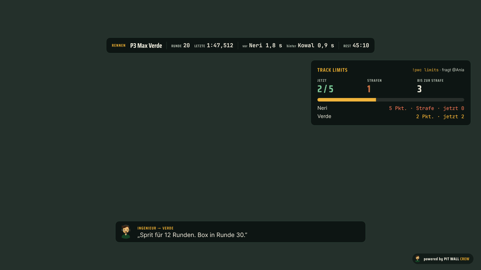
NEUPit Wall: Positionsdiagramm der ganzen Klasse, Fahrlinien der Fahrer im Rundenvergleich, „Plan veraltet“ und Reifenalter der Gegner.

NEUFahrerplan: Spielzeit neben der echten Uhrzeit, Nacht nach der Spielzeit.
NEUNeue Fragen: letzter Boxenstopp, Stopps und Reifenalter eines Gegners, Schnitt der letzten Runden, „wie fährt Amadeusz in T5?“.
NEUPer Stimme: „erinnere mich in 5 Runden, dass…“ und „Boxenstopp in 12 Runden“.
NEUÜberrundungswarnungen „nur vor dem Bremsen“.

NEUPieptöne bei „drücken, sprechen, drücken“ (stummschaltbar).

NEUDer Ingenieur sagt, wenn sich der Gummiabrieb auf der Strecke ändert.
KORREKTURBremstemperaturen in LMU in °C (waren etwa 270° zu hoch).
KORREKTURRundenvergleich: genauer Verlust, kein falscher Verlust am Start.
KORREKTURBeste Runde ohne wegen Track Limits gestrichene Zeit.
KORREKTURBessere Spracherkennung: Namen nach Klang, „Reifen.“ als Frage, mehr Wörter statt „beobachte“.
KORREKTURMeldungen: Sektoren als Ordnungszahl, Dezimalkomma, seltenere Tipps aus der Runde eines Teamkollegen und Überrundungswarnungen.
KORREKTURAndere Sprachen: übersetzte Antworten auch ohne Groq-Schlüssel.
KORREKTURPit Wall: Fair Share für das ganze Team, vollständige Fahrerliste im Stintplan, Autos auf der Karte springen nicht zurück.
KORREKTURFenster: ein geleertes Feld „Stint“ springt nicht auf den alten Wert zurück.
Version 0.4.4.12 (20.11.2026)
KORREKTURStreckenkarte im Bericht: Schikanen (z. B. die erste in Monza) haben nach einer sauberen Runde ihre echte Form.
Version 0.4.4.11 (20.11.2026)
NEUExperimentelle Funktionen (Tester): Karte „Setup-Test“ – A/B bereinigt um Kraftstoff und Reifen, Kurven, Reifenverschleiß, Balance; per Stimme „ich teste ein neues Setup“.
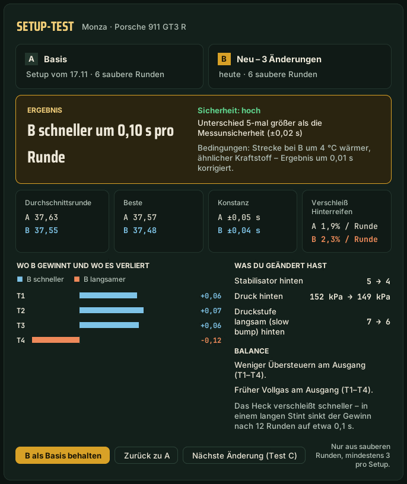
KORREKTURDer Ingenieur versteht mehr Fragen, auch in anderen Sprachen: „wie weit ist der Dritte?“, „Track Limits?“, „was ist mit Fast Bump?“, „15 Liter einstellen“, „hörst du mich?“.
KORREKTURVersteht der Ingenieur eine Frage nicht, sagt er es in der Sprache des Fahrers.
KORREKTUR„Beobachte …“ in Training und Qualifying vergleicht die letzten Runden.
KORREKTUR„Wie sind die Reifen?“ nach dem Boxenstopp spricht nur über die neuen Reifen.
KORREKTURDie Bewertung einer Änderung nach dem Rat zu Randsteinen und Aufsetzen ist konkret.
KORREKTURMonza: Kurvennummern wie auf der Cockpit-Karte; ein Bogen mit Vollgas ist keine Kurve.
KORREKTURFragen zum Fahrbericht: Der Ingenieur kennt auch Bremsen und Reifendrücke.
KORREKTURPit Wall: Korrekturen aus dem Code-Review (Fahrer hinzufügen, Streckenkarte, CSV-Export).
Version 0.4.4.10 (16.11.2026)
KORREKTURPorsche 911 GT3 R (LMU): Dämpfer-Tipps in die richtige Richtung – 1 ist am härtesten, 18 am weichsten.
Version 0.4.4.9 (16.11.2026)
NEULautstärke per Stimme: „lauter“ / „leiser“ und „Spotter lauter“ / „Spotter leiser“; eigener Lautstärkeregler für den Spotter.

KORREKTURAssetto Corsa: Druckhinweis nennt das Rad (links / rechts), wenn sie sich unterscheiden.
Version 0.4.4.8 (15.11.2026)
KORREKTURAssetto Corsa: Die Streckenkarte im Fahrbericht wird wieder angezeigt.
Version 0.4.4.7 (15.11.2026)
NEUFahrbericht, Karte „Kraftstoff“ / „Energie“: auch der höchste Verbrauch auf einer Runde (bei Energie auch Kraftstoff).

KORREKTURLeerer Balken unter „Meldungen“ beim ersten Start einer neuen Version.
Version 0.4.4.6 (15.11.2026)
KORREKTURDas Fenster hängt beim Prüfen auf Updates nach dem Start nicht mehr kurz.
KORREKTURBoxenbefehle: „Druck vorne, 2 runter“ mit Komma, Korrektur im Satz („ich meine links“) und „bis zur Hälfte tanken“.
Version 0.4.4.5 (15.11.2026)
NEUFenster: glatte, abgerundete Kanten bei Karten, Schaltflächen, Plaketten und Schaltern.
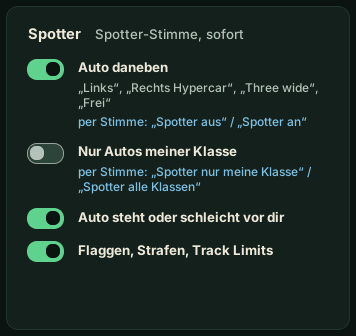
NEUStimme mit Emotion: gute Nachrichten (beste Runde, gewonnene Position, Podium) lebhafter, dringende Meldungen schneller und lauter.
KORREKTURFenster: friert beim Start des Ingenieurs nicht mehr kurz ein.
KORREKTURFahrbericht: auch die übrigen Karten (Reifen, Energie, Überschriften, „Für den nächsten Stint“) als ein Element gezeichnet – der Bericht ist etwa 3-mal leichter.
Version 0.4.4.4 (15.11.2026)
KORREKTURFenster: schnellerer Start – Hilfeseiten werden erst beim ersten Öffnen aufgebaut.
KORREKTURFahrbericht: Kurvenliste, „Beim Fahren verbessern“ und Kacheln als ein Element gezeichnet – schnelleres Scrollen, Berichtsauswahl und Ändern der Fenstergröße.
Nouveautés
Changements des dernières versions de Pit Wall Crew.
Version 0.4.4.18 (21.11.2026)
NOUVEAUTrajectoire (version d’essai, version complète) : chaque section du circuit vue de dessus – ta trajectoire face à la meilleure (la tienne ou celle d’un coéquipier) et des conseils pour rouler autrement.
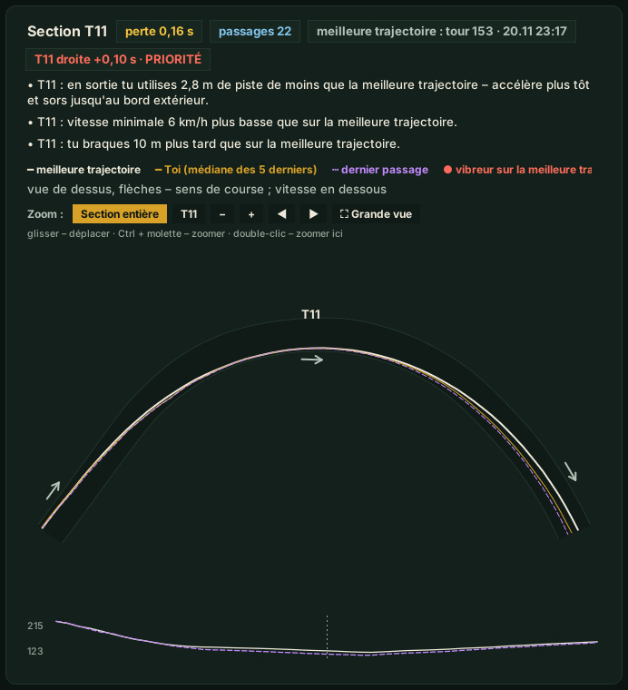
NOUVEAUOverlay OBS pour streamers : barre et cartes avec les données de la voiture, mini-carte de la catégorie, duel (qui rattrape qui et dans quel relais) ; les spectateurs demandent depuis le chat YouTube.
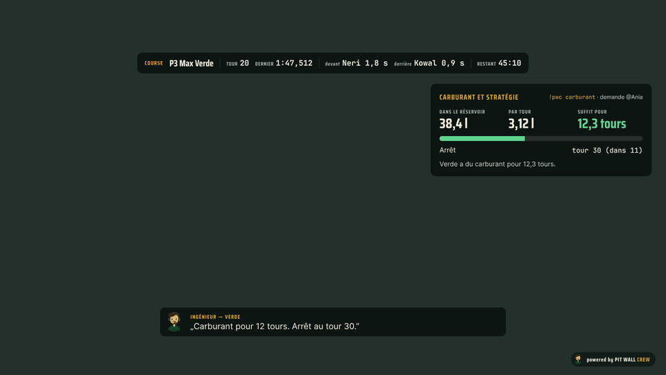
NOUVEAUL’overlay fonctionne aussi quand un coéquipier roule ; réglages sur la page « Overlay OBS » de la fenêtre.
NOUVEAULimites de piste réparties par pilote de la voiture – à la voix et sur l’overlay.

NOUVEAUPit wall : graphique des positions de toute la catégorie, trajectoires des pilotes dans la comparaison des tours, « plan obsolète » et âge des pneus des rivaux.

NOUVEAUPlanning : heure du jeu à côté de l’heure réelle, nuit calculée sur l’heure du jeu.
NOUVEAUNouvelles questions : dernier arrêt, arrêts et âge des pneus d’un rival, moyenne des derniers tours, « comment roule Amadeusz en T5 ? ».
NOUVEAUÀ la voix : « rappelle-moi dans 5 tours de… » et « arrêt dans 12 tours ».
NOUVEAUAlertes de prise de tour « seulement avant le freinage ».

NOUVEAUBips pour « appuie, parle, appuie » (désactivables).

NOUVEAUL’ingénieur prévient quand la gomme sur la piste change.
CORRECTIONTempératures des freins dans LMU en °C (environ 270° de trop).
CORRECTIONComparaison des tours : perte exacte, sans fausse perte au départ.
CORRECTIONMeilleur tour sans temps annulé pour limites de piste.
CORRECTIONMeilleure reconnaissance vocale : noms selon le son, « Pneus. » comme question, plus de mots à la place de « surveille ».
CORRECTIONMessages : secteurs ordinaux, virgule décimale, conseils du tour d’un coéquipier et alertes de prise de tour moins fréquents.
CORRECTIONAutres langues : réponses traduites aussi sans clé Groq.
CORRECTIONPit wall : fair share de toute l’équipe, liste complète des pilotes dans le plan des relais, voitures sur la carte sans retour en arrière.
CORRECTIONFenêtre : un champ « Relais » vidé ne revient plus à l’ancienne valeur.
Version 0.4.4.12 (20.11.2026)
CORRECTIONCarte du circuit dans le rapport : les chicanes (p. ex. la première à Monza) ont leur vraie forme après un tour propre.
Version 0.4.4.11 (20.11.2026)
NOUVEAUFonctions expérimentales (testeurs) : carte « Test de setup » – A/B corrigé du carburant et des pneus, virages, usure des pneus, équilibre ; à la voix « je teste un nouveau setup ».

CORRECTIONL'ingénieur comprend plus de questions, aussi dans d'autres langues : « à combien est le troisième ? », « limites de piste ? », « et le fast bump ? », « mets 15 litres », « tu m'entends ? ».
CORRECTIONQuand l'ingénieur ne comprend pas une question, il le dit dans la langue du pilote.
CORRECTION« Surveille … » en essais et en qualifications compare les derniers tours.
CORRECTION« Comment sont les pneus ? » après un pitstop ne parle que des nouveaux pneus.
CORRECTIONL'avis sur un changement après le conseil sur les vibreurs et le talonnage est précis.
CORRECTIONMonza : numéros de virages comme sur la carte du cockpit ; une courbe à fond n'est pas un virage.
CORRECTIONQuestions sur le rapport de conduite : l'ingénieur connaît aussi les freins et les pressions des pneus.
CORRECTIONPit wall : corrections issues de la revue de code (ajout de pilotes, carte du circuit, export CSV).
Version 0.4.4.10 (16.11.2026)
CORRECTIONPorsche 911 GT3 R (LMU) : conseils d’amortisseurs dans le bon sens – 1 est le plus dur, 18 le plus souple.
Version 0.4.4.9 (16.11.2026)
NOUVEAUVolume à la voix : « plus fort » / « moins fort » et « spotter plus fort » / « spotter moins fort » ; curseur de volume séparé pour le spotter.

CORRECTIONAssetto Corsa : le conseil de pression précise la roue (gauche / droite) quand elles diffèrent.
Version 0.4.4.8 (15.11.2026)
CORRECTIONAssetto Corsa : la carte du circuit s'affiche à nouveau dans le rapport de conduite.
Version 0.4.4.7 (15.11.2026)
NOUVEAURapport de conduite, carte « Carburant » / « Énergie » : aussi le maximum utilisé sur un tour (avec l'énergie, le carburant aussi).

CORRECTIONBarre vide sous « Messages » au premier lancement d'une nouvelle version.
Version 0.4.4.6 (15.11.2026)
CORRECTIONLa fenêtre ne se fige plus un instant pendant la recherche de mises à jour au démarrage.
CORRECTIONCommandes d'arrêt : « pression avant, 2 en moins » avec virgule, correction en cours de phrase (« non, gauches ») et « plein à moitié ».
Version 0.4.4.5 (15.11.2026)
NOUVEAUFenêtre : bords lisses et arrondis pour les cartes, boutons, badges et interrupteurs.

NOUVEAUVoix avec émotion : bonnes nouvelles (meilleur tour, place gagnée, podium) plus vivantes, messages urgents plus rapides et plus forts.
CORRECTIONFenêtre : ne se fige plus un instant au démarrage de l'ingénieur.
CORRECTIONRapport de conduite : les autres cartes (pneus, énergie, en-têtes, « Pour le prochain relais ») aussi dessinées en un seul élément – rapport environ 3 fois plus léger.
Version 0.4.4.4 (15.11.2026)
CORRECTIONFenêtre : démarrage plus rapide – les pages d’aide ne sont construites qu’à la première ouverture.
CORRECTIONRapport de conduite : liste des virages, « À améliorer au pilotage » et tuiles dessinés en un seul élément – défilement, choix du rapport et redimensionnement plus rapides.
Novedades
Cambios en las últimas versiones de Pit Wall Crew.
Versión 0.4.4.18 (21.11.2026)
NUEVOTrazada (versión de prueba, versión completa): cada sección del circuito desde arriba – tu trazada frente a la mejor (tuya o de un compañero) y consejos sobre dónde conducir distinto.

NUEVOOverlay OBS para streamers: barra y tarjetas con datos del coche, minimapa de la categoría, duelo (quién alcanza a quién y en qué stint); los espectadores preguntan desde el chat de YouTube.

NUEVOEl overlay también funciona cuando conduce un compañero; ajustes en la página «Overlay OBS» de la ventana.
NUEVOLímites de pista divididos por pilotos del coche – por voz y en el overlay.
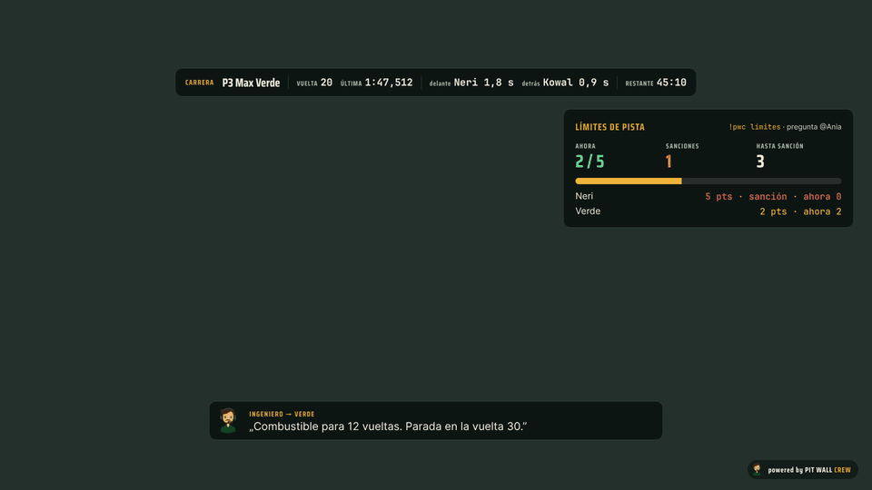
NUEVOPit wall: gráfico de posiciones de toda la categoría, trazadas de los pilotos en la comparación de vueltas, «plan desactualizado» y edad de neumáticos de los rivales.

NUEVOHorario: hora del juego junto a la real, noche calculada con la hora del juego.
NUEVONuevas preguntas: último pitstop, paradas y edad de neumáticos de un rival, media de las últimas vueltas, «¿cómo va Amadeusz en la T5?».
NUEVOPor voz: «recuérdame en 5 vueltas que…» y «pitstop en 12 vueltas».
NUEVOAvisos de doblaje «solo antes de frenar».

NUEVOPitidos con «pulsa, habla, pulsa» (se pueden silenciar).

NUEVOEl ingeniero avisa cuando cambia la goma en la pista.
CORRECCIÓNTemperatura de frenos en LMU en °C (era unos 270° más alta).
CORRECCIÓNComparación de vueltas: pérdida exacta, sin falsa pérdida en la salida.
CORRECCIÓNMejor vuelta sin tiempo anulado por límites de pista.
CORRECCIÓNMejor reconocimiento de voz: nombres por sonido, «Neumáticos.» como pregunta, más palabras en lugar de «vigila».
CORRECCIÓNMensajes: sectores ordinales, coma decimal, menos consejos de la vuelta de un compañero y menos avisos de doblaje.
CORRECCIÓNOtros idiomas: respuestas traducidas también sin clave Groq.
CORRECCIÓNPit wall: fair share de todo el equipo, lista completa de pilotos en el plan de stints, coches en el mapa sin retroceder.
CORRECCIÓNVentana: un campo «Stint» vaciado ya no vuelve al valor anterior.
Versión 0.4.4.12 (20.11.2026)
CORRECCIÓNMapa del circuito en el informe: las chicanes (p. ej. la primera de Monza) tienen su forma real tras una vuelta limpia.
Versión 0.4.4.11 (20.11.2026)
NUEVOFunciones experimentales (testers): tarjeta «Prueba de setup» – A/B corregido por combustible y neumáticos, curvas, desgaste, balance; por voz «estoy probando un setup nuevo».

CORRECCIÓNEl ingeniero entiende más preguntas, también en otros idiomas: «¿a cuánto está el tercero?», «¿límites de pista?», «¿y el fast bump?», «pon 15 litros», «¿me oyes?».
CORRECCIÓNCuando el ingeniero no entiende una pregunta, lo dice en el idioma del piloto.
CORRECCIÓN«Vigila a …» en libres y clasificación compara las últimas vueltas.
CORRECCIÓN«¿Cómo van los neumáticos?» tras un pitstop habla solo de los neumáticos nuevos.
CORRECCIÓNLa valoración de un cambio tras el consejo sobre pianos y golpes contra el suelo es concreta.
CORRECCIÓNMonza: números de curva como en el mapa de la cabina; una curva a fondo no es una curva.
CORRECCIÓNPreguntas sobre el informe de conducción: el ingeniero también conoce los frenos y las presiones.
CORRECCIÓNPit wall: correcciones de la revisión de código (añadir pilotos, mapa del circuito, exportación CSV).
Versión 0.4.4.10 (16.11.2026)
CORRECCIÓNPorsche 911 GT3 R (LMU): consejos de amortiguadores en la dirección correcta – 1 es el más duro, 18 el más blando.
Versión 0.4.4.9 (16.11.2026)
NUEVOVolumen por voz: «más alto» / «más bajo» y «spotter más alto» / «spotter más bajo»; control de volumen propio del spotter.

CORRECCIÓNAssetto Corsa: el consejo de presión indica la rueda (izquierda / derecha) cuando difieren.
Versión 0.4.4.8 (15.11.2026)
CORRECCIÓNAssetto Corsa: el mapa del circuito vuelve a verse en el informe de conducción.
Versión 0.4.4.7 (15.11.2026)
NUEVOInforme de conducción, tarjeta «Combustible» / «Energía»: también lo máximo gastado en una vuelta (con energía, también el combustible).

CORRECCIÓNBarra vacía bajo «Mensajes» en el primer inicio de una versión nueva.
Versión 0.4.4.6 (15.11.2026)
CORRECCIÓNLa ventana ya no se congela un momento al buscar actualizaciones al iniciar.
CORRECCIÓNÓrdenes de parada: «presión delante, 2 abajo» con coma, corregirse en la frase («no, izquierdos») y «reposta hasta la mitad».
Versión 0.4.4.5 (15.11.2026)
NUEVOVentana: bordes suaves y redondeados en tarjetas, botones, etiquetas e interruptores.

NUEVOVoz con emoción: buenas noticias (mejor vuelta, posición ganada, podio) más animadas, avisos urgentes más rápidos y fuertes.
CORRECCIÓNVentana: ya no se congela un momento al iniciar el ingeniero.
CORRECCIÓNInforme de conducción: las demás tarjetas (neumáticos, energía, encabezados, «Para el próximo stint») también dibujadas como un solo elemento – el informe es unas 3 veces más ligero.
Versión 0.4.4.4 (15.11.2026)
CORRECCIÓNVentana: arranque más rápido – las páginas de ayuda se crean solo al abrirlas por primera vez.
CORRECCIÓNInforme de conducción: lista de curvas, «Mejora en la conducción» y mosaicos dibujados como un solo elemento – desplazamiento, elección del informe y cambio de tamaño más rápidos.
Novità
Modifiche nelle ultime versioni di Pit Wall Crew.
Versione 0.4.4.18 (21.11.2026)
NUOVOTraiettoria (versione di prova, versione completa): ogni sezione del circuito vista dall’alto – la tua traiettoria contro la migliore (tua o di un compagno) e consigli su dove guidare diversamente.
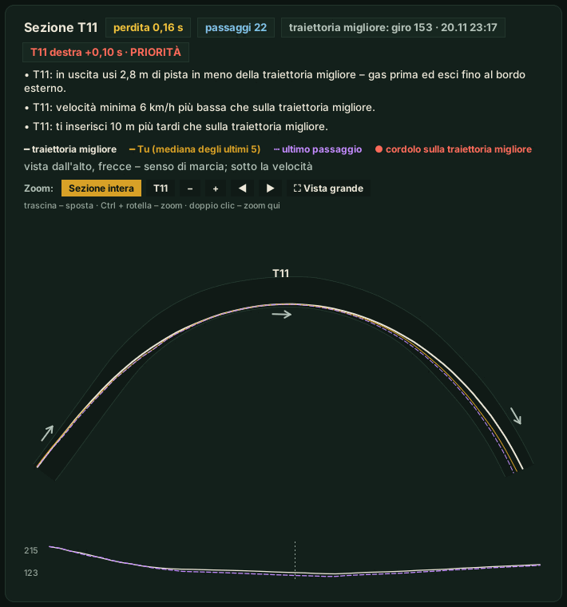
NUOVOOverlay OBS per streamer: barra e schede con i dati dell’auto, minimappa della classe, duello (chi raggiunge chi e in quale stint); gli spettatori chiedono dalla chat di YouTube.

NUOVOL’overlay funziona anche quando guida un compagno; impostazioni nella pagina «Overlay OBS» della finestra.
NUOVOLimiti della pista suddivisi per i piloti dell’auto – a voce e sull’overlay.
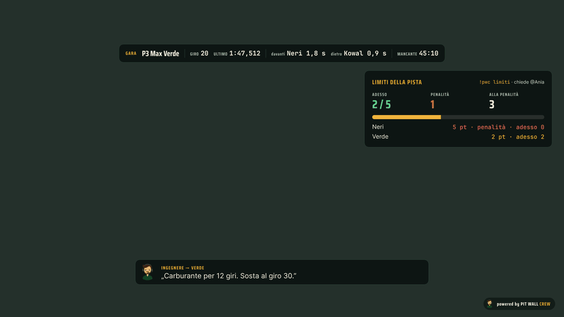
NUOVOPit wall: grafico delle posizioni di tutta la classe, traiettorie dei piloti nel confronto dei giri, «piano superato» ed età delle gomme dei rivali.
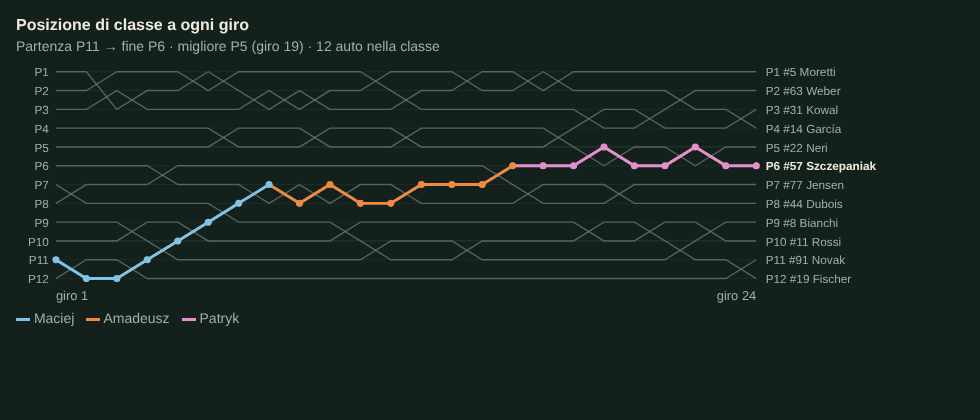
NUOVOProgramma: ora del gioco accanto a quella reale, notte calcolata dall’ora del gioco.
NUOVONuove domande: ultimo pit stop, soste ed età delle gomme di un rivale, media degli ultimi giri, «come va Amadeusz in T5?».
NUOVOA voce: «ricordami tra 5 giri di…» e «pit stop tra 12 giri».
NUOVOAvvisi di doppiaggio «solo prima della frenata».

NUOVOBip con «premi, parla, premi» (disattivabili).
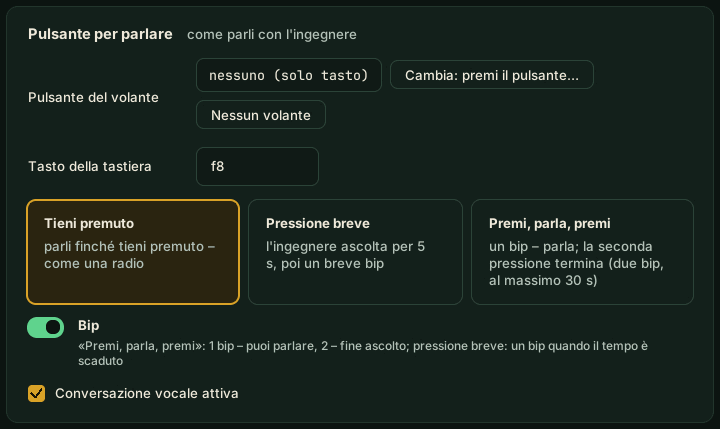
NUOVOL’ingegnere avvisa quando cambia la gommatura della pista.
CORREZIONETemperatura dei freni in LMU in °C (era circa 270° più alta).
CORREZIONEConfronto dei giri: perdita esatta, senza falsa perdita alla partenza.
CORREZIONEGiro migliore senza tempo cancellato per limiti della pista.
CORREZIONERiconoscimento vocale migliore: nomi in base al suono, «Gomme.» come domanda, più parole al posto di «controlla».
CORREZIONEMessaggi: settori ordinali, virgola decimale, consigli dal giro di un compagno e avvisi di doppiaggio meno frequenti.
CORREZIONEAltre lingue: risposte tradotte anche senza chiave Groq.
CORREZIONEPit wall: fair share di tutta la squadra, elenco completo dei piloti nel piano degli stint, auto sulla mappa senza tornare indietro.
CORREZIONEFinestra: un campo «Stint» svuotato non torna al vecchio valore.
Versione 0.4.4.12 (20.11.2026)
CORREZIONEMappa della pista nel rapporto: le chicane (es. la prima di Monza) hanno la forma reale dopo un giro pulito.
Versione 0.4.4.11 (20.11.2026)
NUOVOFunzioni sperimentali (tester): scheda «Test setup» – A/B corretto per carburante e gomme, curve, usura gomme, bilanciamento; a voce «sto provando un nuovo setup».

CORREZIONEL'ingegnere capisce più domande, anche in altre lingue: «quanto manca al terzo?», «limiti della pista?», «e il fast bump?», «metti 15 litri», «mi senti?».
CORREZIONEQuando l'ingegnere non capisce una domanda, lo dice nella lingua del pilota.
CORREZIONE«Controlla …» in prove e qualifiche confronta gli ultimi giri.
CORREZIONE«Come sono le gomme?» dopo un pitstop parla solo delle gomme nuove.
CORREZIONEIl giudizio su una modifica dopo il consiglio su cordoli e talonamento è concreto.
CORREZIONEMonza: numeri delle curve come sulla mappa nell'abitacolo; una curva in pieno non è una curva.
CORREZIONEDomande sul rapporto di guida: l'ingegnere conosce anche freni e pressioni delle gomme.
CORREZIONEPit wall: correzioni dalla revisione del codice (aggiunta piloti, mappa della pista, esportazione CSV).
Versione 0.4.4.10 (16.11.2026)
CORREZIONEPorsche 911 GT3 R (LMU): consigli sugli ammortizzatori nel verso giusto – 1 è il più rigido, 18 il più morbido.
Versione 0.4.4.9 (16.11.2026)
NUOVOVolume a voce: «più forte» / «più piano» e «spotter più forte» / «spotter più piano»; cursore del volume separato per lo spotter.

CORREZIONEAssetto Corsa: il consiglio sulla pressione indica la ruota (sinistra / destra) quando sono diverse.
Versione 0.4.4.8 (15.11.2026)
CORREZIONEAssetto Corsa: la mappa del circuito torna a vedersi nel rapporto di guida.
Versione 0.4.4.7 (15.11.2026)
NUOVORapporto di guida, scheda «Carburante» / «Energia»: anche il massimo consumato in un giro (con l'energia, anche il carburante).

CORREZIONEBarra vuota sotto «Messaggi» al primo avvio di una nuova versione.
Versione 0.4.4.6 (15.11.2026)
CORREZIONELa finestra non si blocca più per un attimo durante il controllo degli aggiornamenti all'avvio.
CORREZIONEComandi della sosta: «pressione davanti, 2 giù» con la virgola, correggersi nella frase («no, sinistre») e «rifornisci a metà».
Versione 0.4.4.5 (15.11.2026)
NUOVOFinestra: bordi lisci e arrotondati per schede, pulsanti, etichette e interruttori.

NUOVOVoce con emozione: buone notizie (giro migliore, posizione guadagnata, podio) più vivaci, messaggi urgenti più veloci e forti.
CORREZIONEFinestra: non si blocca più per un attimo all'avvio dell'ingegnere.
CORREZIONEReport di guida: anche le altre schede (gomme, energia, intestazioni, «Per il prossimo stint») disegnate come un unico elemento – il report è circa 3 volte più leggero.
Versione 0.4.4.4 (15.11.2026)
CORREZIONEFinestra: avvio più rapido – le pagine di aiuto vengono create solo alla prima apertura.
CORREZIONEReport di guida: elenco curve, «Migliora nella guida» e riquadri disegnati come un unico elemento – scorrimento, scelta del report e ridimensionamento più veloci.
Nyheder
Ændringer i de seneste versioner af Pit Wall Crew.
Version 0.4.4.18 (21.11.2026)
NYKørelinje (prøveversion, fuld version): hver banesektion set ovenfra – din linje mod den bedste (din eller en holdkammerats) og råd om, hvor du skal køre anderledes.

NYOBS-overlay til streamere: bjælke og kort med bilens data, minikort over klassen, duel (hvem indhenter hvem og i hvilket stint); seerne spørger fra YouTube-chatten.

NYOverlayet virker også, når en holdkammerat kører; indstillinger på siden „OBS-overlay“ i vinduet.
NYTrack limits fordelt på bilens kørere – med stemmen og på overlayet.

NYPit wall: positionsgraf for hele klassen, kørernes linjer i omgangssammenligningen, „plan forældet“ og rivalernes dækalder.

NYKøreplan: tid i spillet ved siden af den rigtige, nat regnet ud fra tiden i spillet.
NYNye spørgsmål: sidste pitstop, en rivals stop og dækalder, gennemsnit af de seneste omgange, „hvordan kører Amadeusz i T5?“.
NYMed stemmen: „mind mig om om 5 omgange, at…“ og „pitstop om 12 omgange“.
NYAdvarsler om overhaling af bagmænd „kun før opbremsning“.

NYBip ved „tryk, tal, tryk“ (kan slås fra).

NYIngeniøren siger til, når gummiet på banen ændrer sig.
RETTELSEBremsetemperaturer i LMU i °C (var ca. 270° for høje).
RETTELSEOmgangssammenligning: præcist tab, intet falsk tab ved start.
RETTELSEBedste omgang uden tid annulleret for track limits.
RETTELSEBedre talegenkendelse: navne efter lyd, „Dæk.“ som spørgsmål, flere ord i stedet for „hold øje med“.
RETTELSEBeskeder: sektorer som ordenstal, decimalkomma, sjældnere råd fra en holdkammerats omgang og advarsler om overhaling.
RETTELSEAndre sprog: oversatte svar også uden Groq-nøgle.
RETTELSEPit wall: fair share for hele holdet, fuld kørerliste i stintplanen, biler på kortet hopper ikke tilbage.
RETTELSEVindue: et tømt „Stint“-felt vender ikke tilbage til den gamle værdi.
Version 0.4.4.12 (20.11.2026)
RETTELSEBanekort i rapporten: chikaner (f.eks. den første i Monza) får deres rigtige form efter én ren omgang.
Version 0.4.4.11 (20.11.2026)
NYEksperimentelle funktioner (testere): kortet „Setuptest“ – A/B korrigeret for brændstof og dæk, sving, dækslid, balance; med stemmen „jeg tester et nyt setup“.

RETTELSEIngeniøren forstår flere spørgsmål, også på andre sprog: „hvor langt er der til tredje?“, „track limits?“, „hvad med fast bump?“, „sæt 15 liter“, „kan du høre mig?“.
RETTELSENår ingeniøren ikke forstår et spørgsmål, siger han det på kørerens sprog.
RETTELSE„Hold øje med …“ i træning og kvalifikation sammenligner de seneste omgange.
RETTELSE„Hvordan er dækkene?“ efter et pitstop taler kun om de nye dæk.
RETTELSEVurderingen af en ændring efter rådet om kantsten og bundslag er konkret.
RETTELSEMonza: svingnumre som på kortet i cockpittet; en bue taget for fuld gas er ikke et sving.
RETTELSESpørgsmål om kørselsrapporten: ingeniøren kender også bremser og dæktryk.
RETTELSEPit wall: rettelser fra kodegennemgangen (tilføjelse af kørere, banekort, CSV-eksport).
Version 0.4.4.10 (16.11.2026)
RETTELSEPorsche 911 GT3 R (LMU): dæmperråd i den rigtige retning – 1 er hårdest, 18 blødest.
Version 0.4.4.9 (16.11.2026)
NYLydstyrke med stemmen: »højere« / »lavere« og »spotter højere« / »spotter lavere«; egen lydstyrkeskyder til spotteren.

RETTELSEAssetto Corsa: trykrådet siger hvilket hjul (venstre / højre), når de er forskellige.
Version 0.4.4.8 (15.11.2026)
RETTELSEAssetto Corsa: Banekortet i kørselsrapporten vises igen.
Version 0.4.4.7 (15.11.2026)
NYKørselsrapport, kortet »Brændstof« / »Energi«: også det højeste forbrug på én omgang (med energi også brændstof).

RETTELSETom bjælke under »Beskeder« ved første start af en ny version.
Version 0.4.4.6 (15.11.2026)
RETTELSEVinduet fryser ikke længere et øjeblik, mens der søges efter opdateringer ved start.
RETTELSEPitstop-kommandoer: »tryk foran, 2 ned« med komma, rettelse midt i sætningen (»nej, venstre«) og »tank halvt op«.
Version 0.4.4.5 (15.11.2026)
NYVindue: glatte, afrundede kanter på kort, knapper, mærker og kontakter.

NYStemme med følelse: gode nyheder (bedste omgang, vundet placering, podie) mere livlige, hastebeskeder hurtigere og højere.
RETTELSEVindue: fryser ikke længere et øjeblik, når ingeniøren starter.
RETTELSEKørselsrapport: de øvrige kort (dæk, energi, overskrifter, „Til næste stint“) tegnes også som ét element – rapporten er ca. 3 gange lettere.
Version 0.4.4.4 (15.11.2026)
RETTELSEVindue: hurtigere start – hjælpesiderne bygges først, når de åbnes første gang.
RETTELSEKørselsrapport: svingliste, „Forbedr i kørslen“ og felter tegnet som ét element – hurtigere rulning, valg af rapport og ændring af vinduesstørrelse.